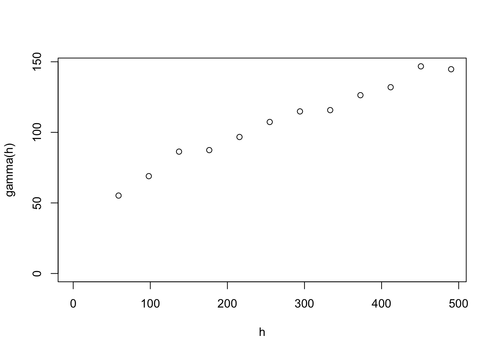

In previous labs, we studied how to visualise the spatial objects. In this lab, we will study operations on the data frame (and therefore, sf object).
Two R packages, tidyr and dplyr, are designed to simplify the data cleaning and preparation.
Suppose you want to plot all suburbs in City of Banyule. However, for suburbs shared with other LGAs, such as Bundoora, you want to plot the whole suburb, instead of the portion inside Banyule.
First, you can filter all these suburbs from VICSub. Here, I used the variable LC_PLY_PID instead of suburb names, because there are actually two Bellfield in Vitoria (and only one is in City of Banyule).
library(sf)## Warning: package 'sf' was built under R version 3.6.2library(ggplot2)## Warning: package 'ggplot2' was built under R version 3.6.2library(dplyr)## Warning: package 'dplyr' was built under R version 3.6.2load("datasets/BSub.Rdata")
VICSub = st_read(dsn="datasets/VICSub/VIC_LOCALITY_POLYGON_shp.shp", "VIC_LOCALITY_POLYGON_shp")## Reading layer `VIC_LOCALITY_POLYGON_shp' from data source
## `/Users/tingjinc/Dropbox/2_MAST90122/90122LabGit/datasets/VICSub/VIC_LOCALITY_POLYGON_shp.shp'
## using driver `ESRI Shapefile'
## Simple feature collection with 2973 features and 12 fields
## Geometry type: POLYGON
## Dimension: XY
## Bounding box: xmin: 140.9619 ymin: -39.13657 xmax: 149.9763 ymax: -33.98127
## CRS: 7844VICSub <- st_transform(VICSub, 4326)
BSub2 = VICSub %>% filter(LC_PLY_PID %in% BSub$LC_PLY_PID)Afterward, you can visualise your results.
ggplot() + geom_sf(data = BSub2, aes(fill = VIC_LOCA_2)) +
geom_sf_label(data = BSub2, aes(label = VIC_LOCA_2), size = 2.1) +
theme(legend.position="none")## Warning in st_point_on_surface.sfc(sf::st_zm(x)): st_point_on_surface may not
## give correct results for longitude/latitude data